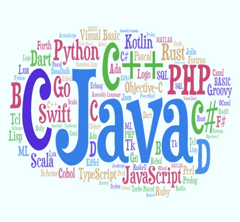

Lockdown helped me to keep in touch with my creative programming side most of the time. The first few days went by as normally as it could. But the issue was that I’ve been getting a sudden amount of free time. The sudden change from constant studying to having nothing to do has been really jarring and confusing. As a result, I was spending the time totally unproductively, watching movies, sleeping all the time, and doing nothing. And I was telling to myself, “Look Ahammad, it’s not just you! It’s everybody your age in the world who is dealing with this. You are not alone. They are also wasting their valuable time.”
More Blogs

How I Have Become A Self-Taught Python Developer in 3 Years?
What I always say is that “Programming is neither so difficult nor too easy”. So, for learning programming, you don’t need too much merit but you need to have much potential and passion for programming like, “Yes, I love programming and I will learn that.” In this blog, I have described my timelines of learning Python programming. I hope you will be benefitted too if you follow my route.
16 August, 2020 üïò 7 min read

NumPy, SciPy, Pandas, Matplotlib – How to get into the Data Science?
Data Science is an interdisciplinary field that uses scientific methods, processes, algorithms, and systems to extract knowledge and insights from many structural and unstructured data. This blog broadly describes why should you enter the field of Data Science “right now” and where you will find good resources to learn NumPy, SciPy, Pandas, and Matplotlib?
21 September, 2020 üïò 12 min read

প্রোগ্রামিং আসলে কি এবং প্রোগ্রামিং এর ক্যারিয়ার সমূহ
প্রোগ্রামিং এবং গণিত গভীরভাবে সম্পর্কযুক্ত। প্রোগ্রামিং-এর Basic ধারনা দিয়ে অনেক কঠিন গাণিতিক সমস্যা সমাধান করা যায় এবং গণিতের উপর ভিত্তি করেই প্রোগ্রামিং এর সূচনা হয়েছে। এ ব্লগপোস্টে তোমাদের প্রোগ্রামিং-এর সাথে পরিচয় হবে। তোমরা আরও জানতে পারবে প্রোগ্রামিং এর বিভিন্ন ক্যারিয়ার সমূহ।
6 October, 2020 üïò 20 min read

প্রোগ্রামিং ল্যাঙ্গুয়েজ
কম্পিউটার বা মেশিন মানুষের ভাষা বুঝতে পারে না। যদিও আমরা কম্পিউটার ব্যবহারের সময় বাংলা কিংবা ইংরেজিতে কাজ করি, কম্পিউটার মূলত অন্য একটি ভাষায় আমাদের কাজগুলোকে প্রসেস করে। আর সে ভাষাটি হল বাইনারি। বাইনারি হলো 2 ভিত্তিক সংখ্যা ব্যবস্থা। বাইনারিতে কেবল দুটি অংক 0 এবং 1 ব্যবহার করে প্রতিটি বিটকে প্রকাশ করা হয়।
12 October, 2020 üïò 16 min read